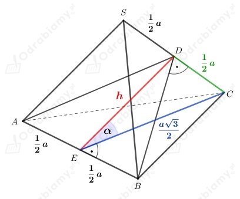
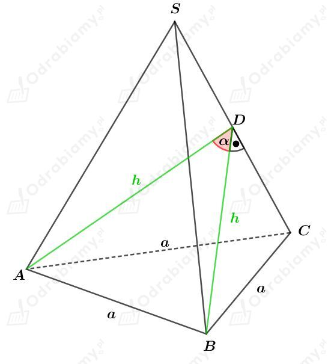
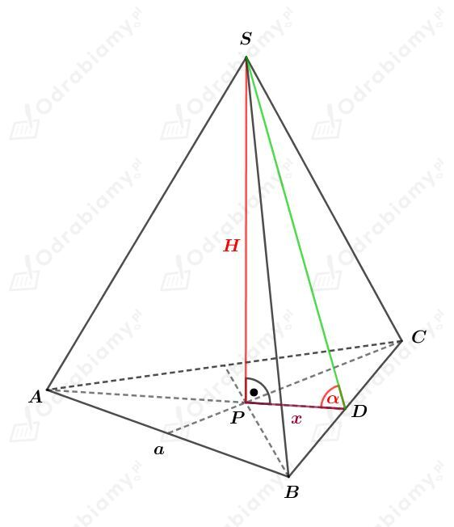
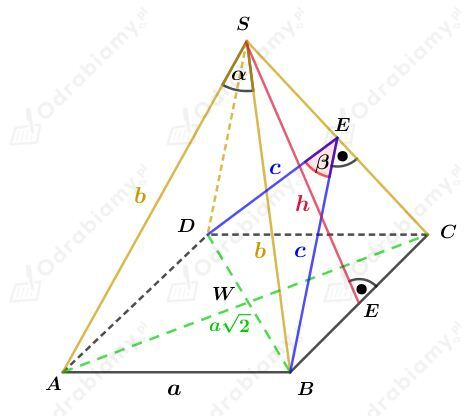
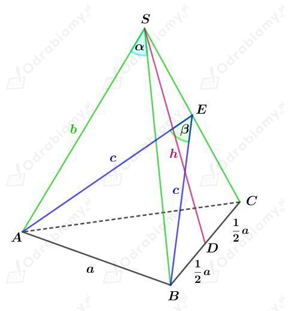
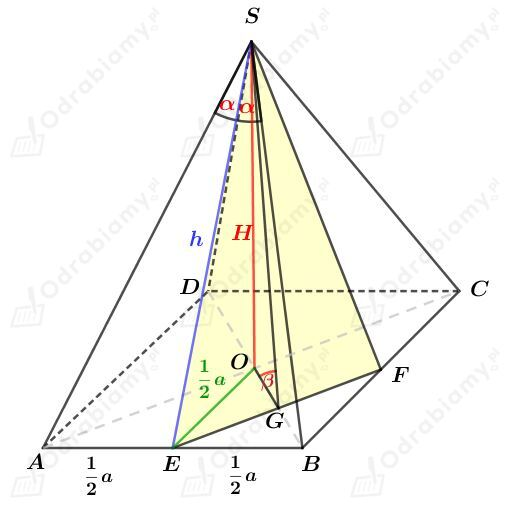
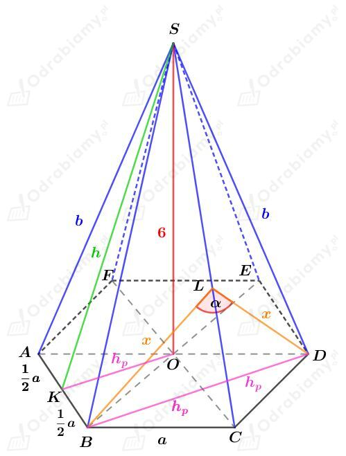
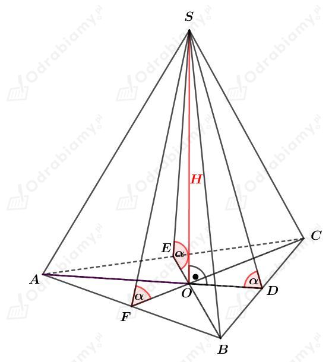

Rysunek pomocniczy:

Oznaczmy przez
Rozważmy trójkąt
Zauważmy, że jest to trójkąt równoramienny, ponieważ
Punkt
Korzystając z twierdzenia Pitagorasa w trójkącie
czyli
Rozważmy trójkąt
Zauważmy, że
czyli
zatem na mocy twierdzenia odwrotnego do twierdzenia Pitagorasa dostajemy, że trójkąt
Korzystając z określenia funkcji trygonometrycznych w trójkącie prostokątnym dostajemy, że
Rysunek:

Z treści zadania wiemy, że
Korzystając z twierdzenia cosinusów dla trójkąta ABD mamy:
Korzystając ze wzoru na długość wysokości trójkąta równobocznego stwierdzamy, że h jest wysokością trójkąta równobocznego.
Zatem ściany boczne są trójkątami równobocznymi, czyli ostrosłup ten jest czworościanem foremnym.
co kończy dowód.
Rysunek:

Niech R będzie długością promienia koła opisanego na trójkącie równobocznym ABC. Wiemy, że pole tego koła wynosi 16𝜋 cm2. Stąd mamy:
Wiemy, że długość promienia R stanowi 2/3 długości wysokości trójkąta równobocznego ABC. Korzystając ze wzoru na długość wysokości trójkąta równobocznego mamy:
Wyznaczmy pole powierzchni podstawy tego ostrosłupa. Korzystając ze wzoru na pole trójkąta równobocznego mamy:
Objętość tego ostrosłupa wynosi 20√3 cm3. Stąd mamy:
Odcinek x stanowi 1/3 długości wysokości trójkąta równoramiennego będącego podstawą tego ostrosłupa. Korzystając ze wzoru na długość wysokości trójkąta równobocznego mamy:
Rozważmy trójkąt prostokątny PDS. Wyznaczmy tangens kąta 𝛼. Mamy:
Rysunek:

Korzystając z twierdzenia cosinusów dla trójkąta ABS mamy:
Korzystając z twierdzenia Pitagorasa dla trójkąta SEC mamy:
Obliczmy pole powierzchni jednej ściany bocznej tego ostrosłupa.
Z drugiej strony, wiemy, że to pole wynosi:
Stąd otrzymujemy:
Korzystając z twierdzenia cosinusów dla trójkąta BED mamy:
Podstawiamy wcześniej otrzymane a i c i mamy:
Rysunek:

Wiemy, że
Korzystając z twierdzenia cosinusów dla trójkąta ABS mamy:
Korzystając z twierdzenia Pitagorasa dla trójkąta DCS mamy:
Obliczmy pole powierzchni jednej ściany bocznej tego ostrosłupa. Mamy:
Z drugiej strony, pole tej ściany jest równe:
Stąd otrzymujemy:
Korzystając z twierdzenia cosinusów dla trójkąta ABE mamy:
Podstawiając wcześniej otrzymane wartości a i c mamy:
Rysunek:

Zauważmy, że odcinek OG stanowi 1/4 długości przekątnej kwadratu ABCD, czyli
Rozważmy trójkąt prostokątny SEB. Wyznaczmy tangens kąta 𝛼. Mamy:
Rozważmy trójkąt prostokątny EOS. Korzystając z twierdzenia Pitagorasa mamy:
Obie strony równości są dodatnie, zatem:
Rozważmy trójkąt prostokątny OGS. Wyznaczmy tangens kąta 𝛽. Mamy:
Korzystając z własności tg𝛼ctg𝛼=1 mamy:
Rysunek:

W podstawę tego ostrosłupa wpisano okrąg o promieniu długości 6√3, zatem
Korzystając ze wzoru na długość wysokości trójkąta równobocznego mamy:
Korzystając z twierdzenia Pitagorasa dla trójkąta KOS mamy:
Korzystając z twierdzenia Pitagorasa dla trójkąta AOS mamy:
Wyznaczmy pole powierzchni jednej ściany bocznej. Mamy:
Z drugiej strony, to pole możemy zapisać jako:
Stąd mamy:
Korzystając z twierdzenia cosinusów dla trójkąta BDL mamy:
Uzasadnimy, że w ostrosłupie spodek wysokości jest środkiem okręgu wpisanego w podstawę tego ostrosłupa.
Dla ostrosłupa trójkątnego otrzymujemy:

Zauważmy, że
Zatem
Zatem spodek wysokości O jest środkiem okręgu wpisanego w podstawę tego ostrosłupa.
Możemy zauważyć, że dla ostrosłupa czworokątnego otrzymamy analogiczne zależności.
Niech O będzie spodkiem wysokości tego ostrosłupa, a H długością jego wysokości.
Niech punkty D, E, F, H będą środkami krawędzi podstawy tego ostrosłupa.
Mamy więc:
Wobec tego otrzymujemy, że
Zatem spodek wysokości O jest środkiem okręgu wpisanego w podstawę tego ostrosłupa.
Analogicznie będzie dla ostrosłupa pięciokątnego, sześciokątnego, itd.